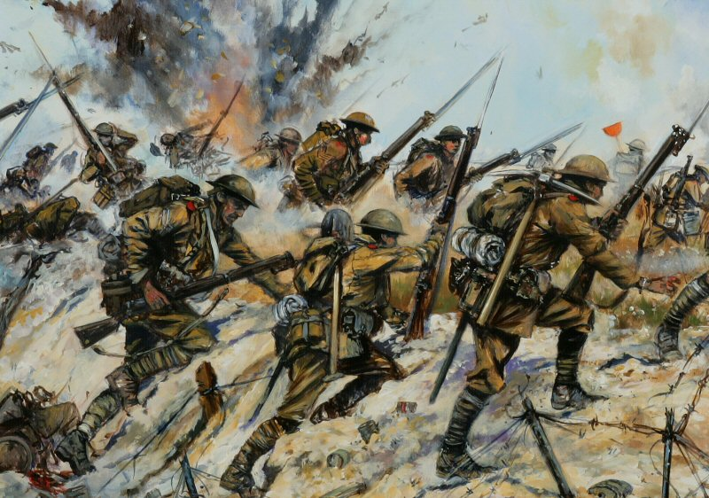
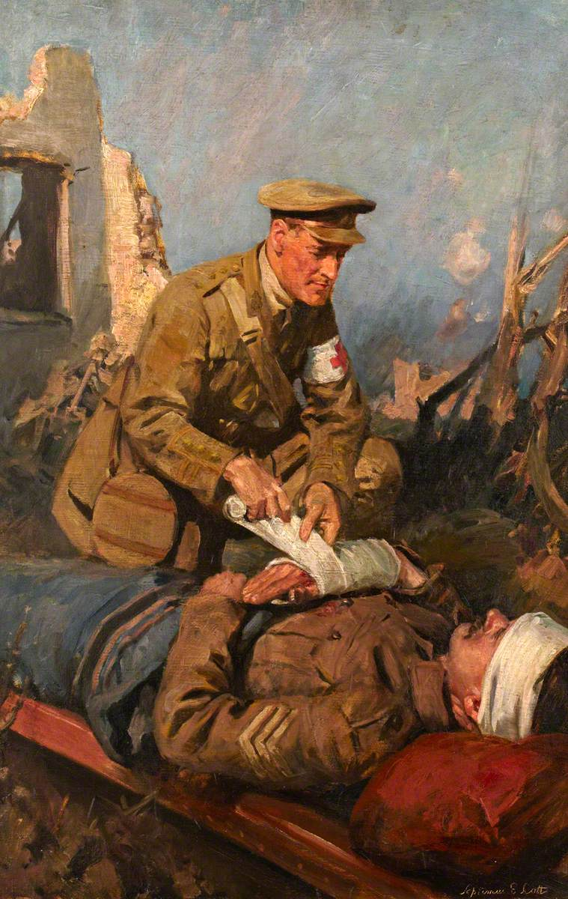

World War II
World War II, also called Second World War, conflict that involved virtually every part of the world during the years 1939–45. The principal belligerents were the Axis powers—Germany, Italy, and Japan—and the Allies—France, Great Britain, the United States, the Soviet Union, and, to a lesser extent, China. The war was in many respects a continuation, after an uneasy 20-year hiatus, of the disputes left unsettled by World War I. The 40,000,000–50,000,000 deaths incurred in World War II make it the bloodiest conflict, as well as the largest war Along with World War I, World War II was one of the great watersheds of 20th-century geopolitical history. It resulted in the extension of the Soviet Union’s power to nations of eastern Europe, enabled a communist movement to eventually achieve power in China, and marked the decisive shift of power in the world away from the states of western Europe and toward the United States and the Soviet Union.
By the early part of 1939 the German dictator Adolf Hitler had become determined to invade and occupy Poland. Poland, for its part, had guarantees of French and British military support should it be attacked by Germany. Hitler intended to invade Poland anyway, but first he had to neutralize the possibility that the Soviet Union would resist the invasion of its western neighbour. Secret negotiations led on August 23–24 to the signing of the German-Soviet Nonaggression Pact in Moscow. In a secret protocol of this pact, the Germans and the Soviets agreed that Poland should be divided between them, with the western third of the country going to Germany and the eastern two-thirds being taken over by the U.S.S.R.
